|
Khevron -
Moose Adventures
Our Moose Adventures
USA:
Countries:
Australia:
New Zealand!
Collections
Mooseadventures 2018-19 Map
Mooseadventures 2012-13 Map
Forgive my bad HTML!
COPYRIGHT
|
Khevron -
Moose Adventures
Our Moose Adventures
USA:
Countries:
Australia:
New Zealand!
Collections
Mooseadventures 2018-19 Map
Mooseadventures 2012-13 Map
Forgive my bad HTML!
COPYRIGHT
Traveled Qantas to Brisbane, bouncing in Sydney, Australia on 12/2/25 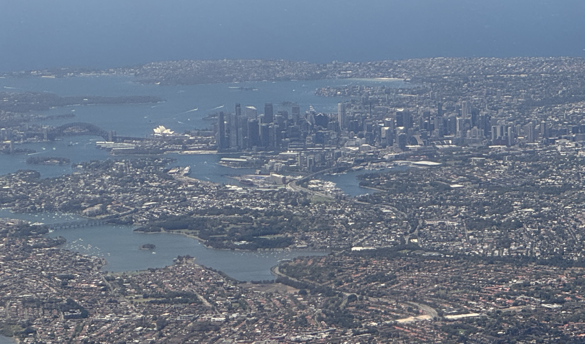
Approaching Brisbane along the coast: 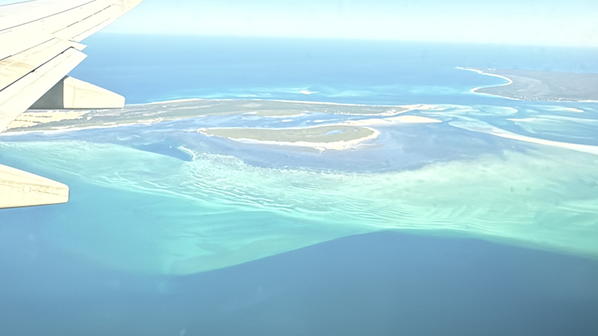
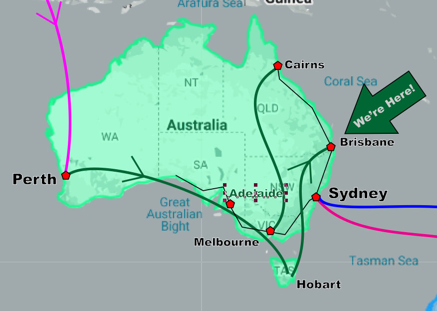
Brisbane welcomed us with clear skys and 70's F! 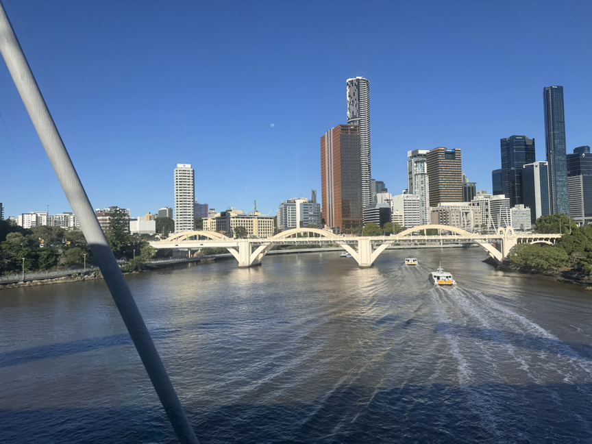
Staying at a Hostel-home way South of the City. 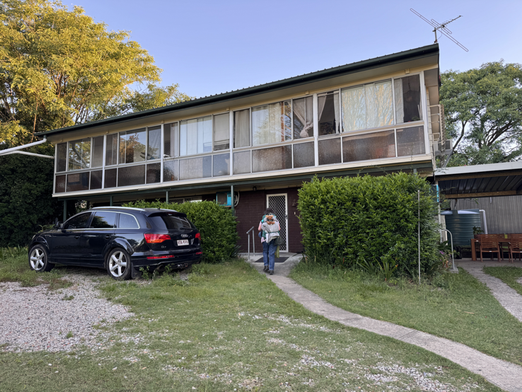
We took a day to make plans. Thought we had a House/Pet-Sitting gig in Adelaide, which would have been great, being over the Christmas holiday, but it fell through.
Spent the afternoon/evening in Brisbane. The locals call it "BrisVegas".
Impressive buildings 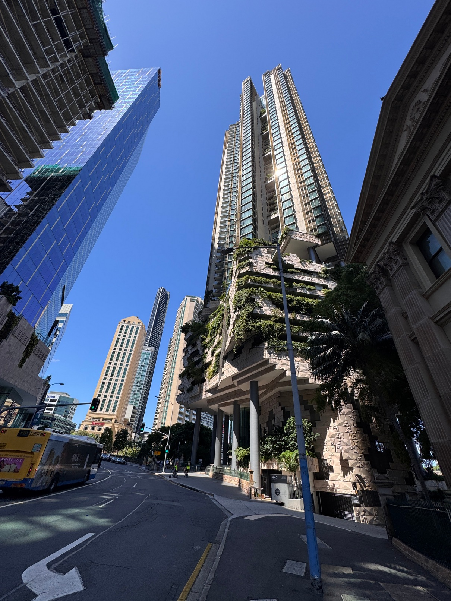
Mosaic 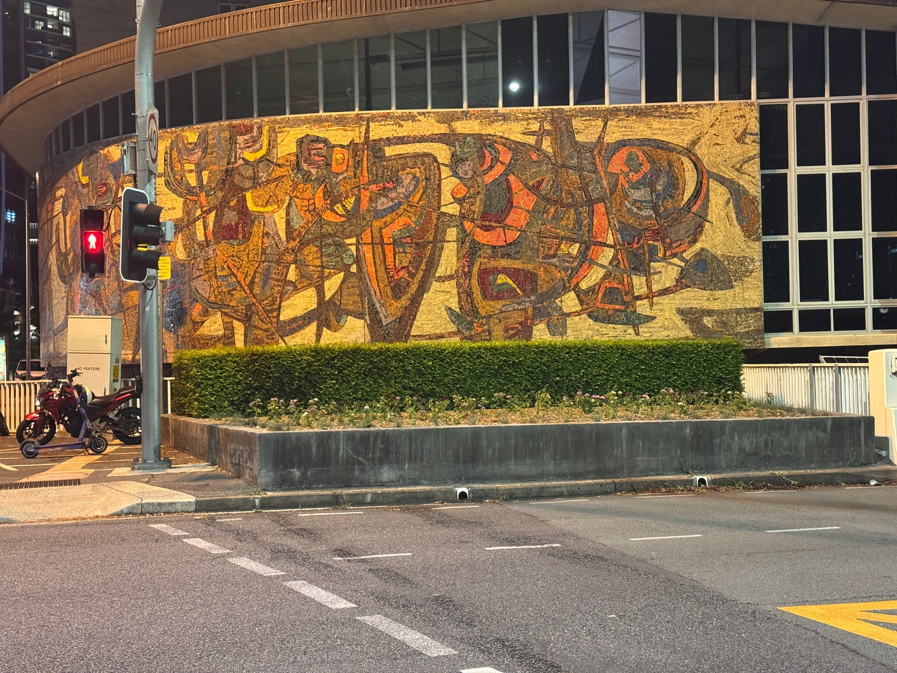
Sent up to the 23rd floor of the building along the river. 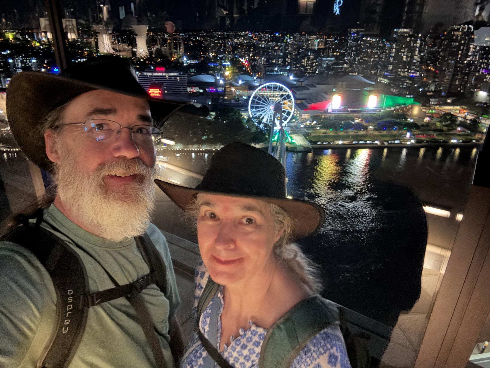
We had planned to be here a couple days longer, but there's a big bi-annual Australia-England Cricket tournament going on'The Ashes test, which knocked us out of Perth a couple of weeks ago, for no reasonable rooms available, and is here in Brisbane now. It'll likely be in Sydney when we get there in January, but Sydney's much bigger and may be able to absorb what is called, 'The Barmy Army"!
On Dec 6, we'll took the 'Tilt Train' (smooth ride) up to Bundaberg. Got a nice dip in the Riviera Motel Pool! 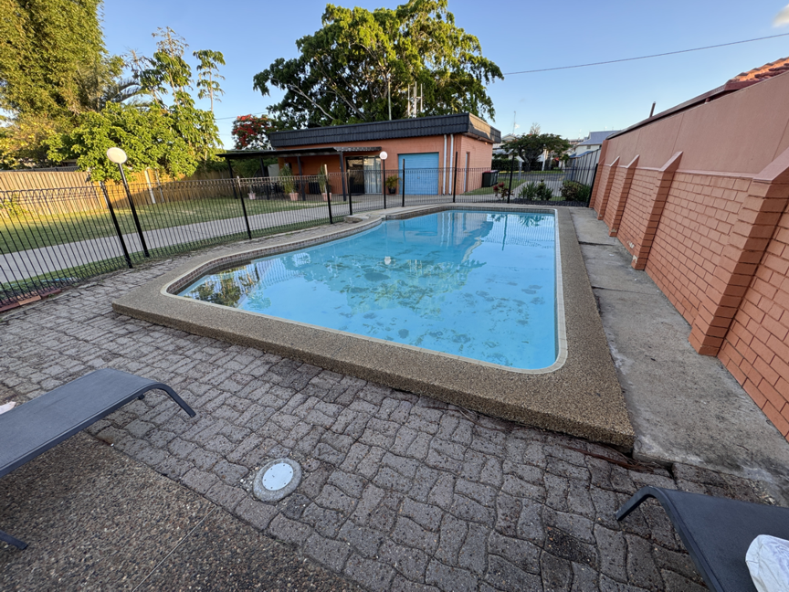
Visited the Alexandra Zoo. It was free, and diminutive, but nice. Wallabies, Dingos, a Monitor lizard. 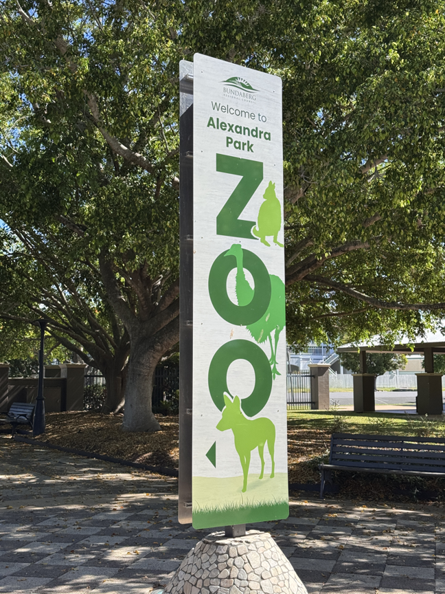
Had a number of birds, including Emu and this Red-Winged Parrot.
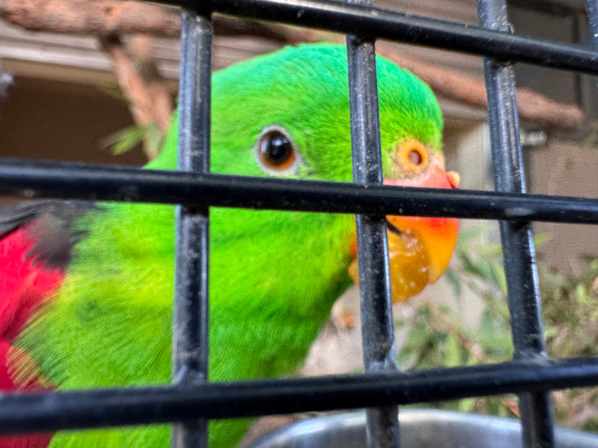
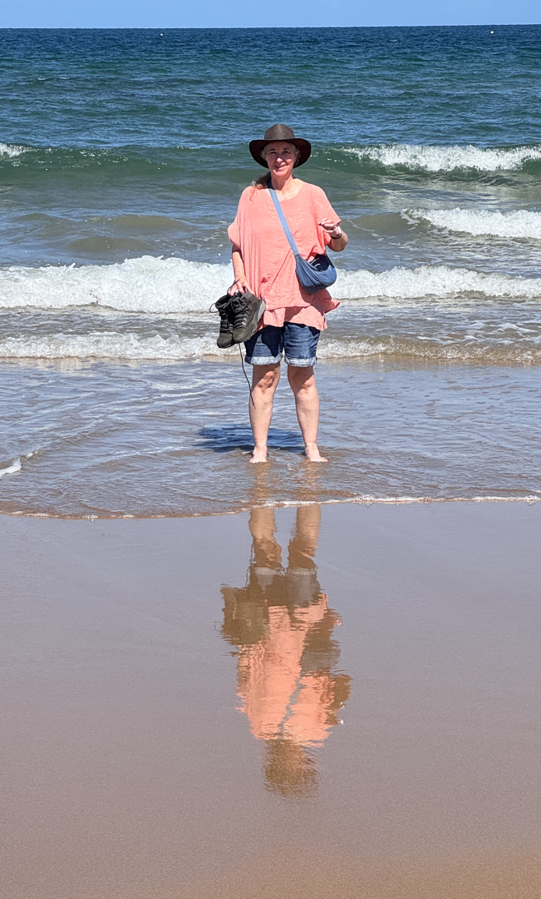
We sort of mentally threw a dart at the Rail map and chose a reasonable distance between Bundaberg and Cairns to stop, and got Bowen. 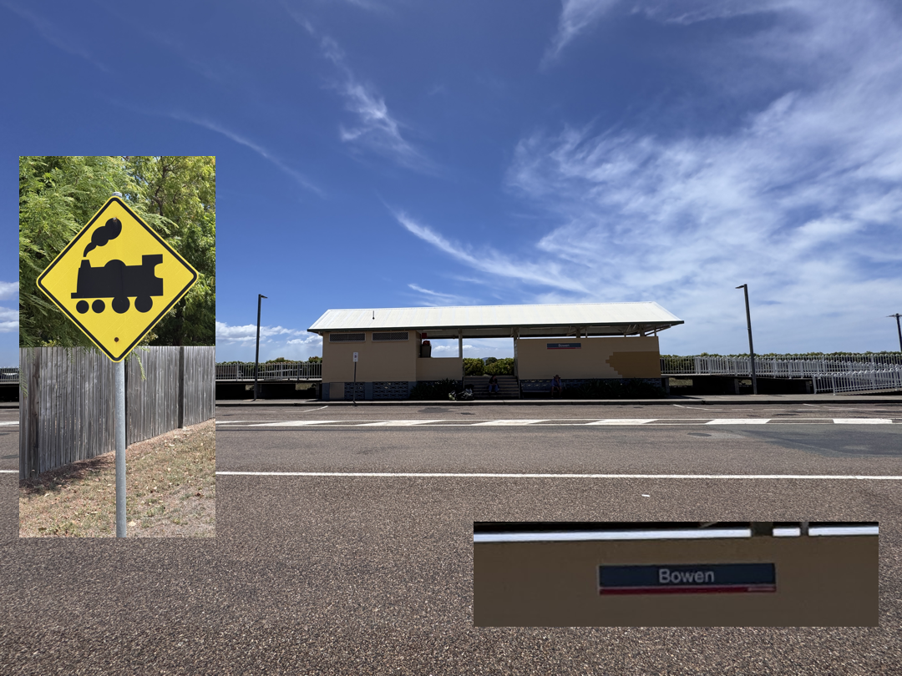
This leg was an overnight train, but we couldn't upgrade to a sleeper cabin, so slept in a regular seat - not ideal. Slept some, but as it happens with 80 people in a car, someone's going to be noisy at 5:30am, or on the phone, or whatever. May have gotten 4 hours sleep.
Took the town's 1 (one) bus around to the beach resort area, and walked beaches. Here's Horseshoe Beach 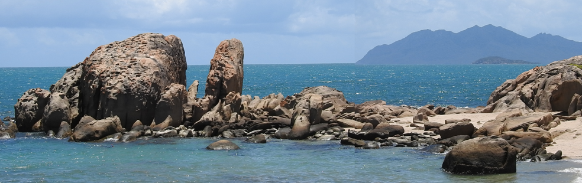
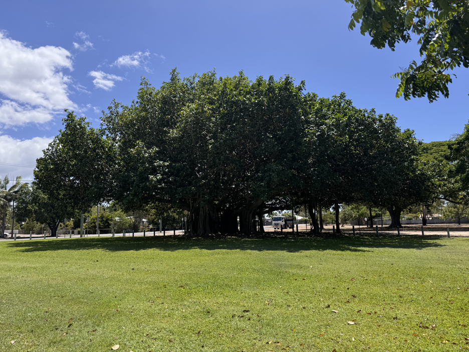
To Cairns and the Great Barrier Reef! We booked a snorkel/scuba cruise for Saturday
8 hour train Bowen to Cairns. Pretty Scenery with Sugar Cane and Palm plantations, mountains and cows!
Will always update the calendar on the main 2025-26 travel page daily.
THEN on December 18, we head to Melbourne and Adelaide, Australia!
Then New South Wales Coastal places, then to New Zealand on January 12.
Don Goertz
Pages
Travel Page
Our Australasia Travel Blog
YouTube Channel
2025-2026
Links to visited
Places/Countries:
Juneau, Alaska
Japan
Perth, Western Australia
Wellington, New Zealand
of Interest:
2003 Trip to Hobart, from Alaska
& Calendar Page
& Calendar Page
1997-2025+
Don Goertz
aka Khevron
"KEV-rin"
to Brisbane, Queensland, Australia!
Here's the Bowen Station ...or "Blowen" as they call it, 'cus it's windy! It's a small town.
We waited to share a cab to get to our motel, the Pearly Shell. We have a whole day in Bowen, but worry about catching the train out at 8am Thursday, being 3 miles away and no bus, and maybe a cab.


To Cairns, Australia!